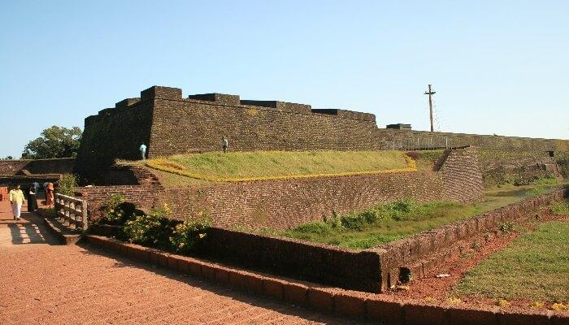

Payyambalam Beach

St. Angelo Fort
Muzhappilangad Drive

Aralam Wildlife Sanctuary
Meenkunnu Beach
Ezhara Beach
Kannur is a coastal city in the south Indian state of Kerala. It was once an ancient trading port. Enduring monuments such as 16th-century St. Angelo Fort, once occupied by European colonial forces, show the city’s significant role in the spice trade. Housed in a former palace, the Arakkal Museum highlights Kerala's one Muslim royal family.
Palakkayam Thattu is one of the alluring places to visit in Kannur near the Western Ghats because of the verdant greenery and dizzying height of about 3350 feet above the sea level. It also happens to be one of the most visited hill stations in the state of Kerala. Populated by dense forests and several hillocks, the quaint hamlet is a favoured destination for avid trekkers.